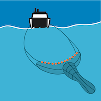

Τα κύρια καλλιεργούμενα είδη, στην Ελλάδα και τη Μεσόγειο είναι η τσιπούρα και το λαβράκι, αποτελώντας περίπου το 95% της συνολικής παραγωγής. Πλέον υλοποιείτε μία προσπάθεια αύξησης του αριθμού των καλλιεργούμενων ειδών με την προσθήκη νέων, όπως ο κρανιός, το τσιπούρα λαβράκι φαγκρί, η συναγρίδα κ.α. Το φαγκρί αποτελεί ένα εκλεκτό έδεσμα σε πολλά ελληνικά εστιατόρια, παρόλα αυτά αποτελεί ένα αρκετά ακριβό αλίευμα. Η πετυχημένη εκτροφή του θα οδηγήσει σε μείωση τόσο της τιμής όσο και της αλι- ευτικής πίεσης που δέχεται το είδος αυτό.
Μηχανότρατα
Γρι γρι
Πελαγικά παραγάδια
Βιντζότρατα
Tokyo
Tokyo is the capital of Japan.